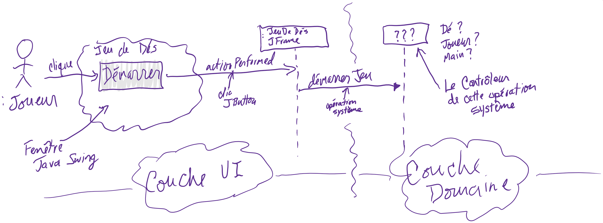

ü§†:Pourquoi faire une RDCU?
Pour apprendre à faire une solution
modulaire et intuitive

RDCU: aspects
- Proposer des classes logicielles correspondant aux classes conceptuelles
- Inspirées du MDD
- Pour réduire le décalage des représentations
- Utiliser les principes GRASP
RDCU - Jeu de dés
Opérations système du DSS
")
RDCU - Jeu de dés
Première opération système:

Qui envoie l’opération? Qui la reçoit?
RDCU (solution Java Swing)
Opération démarrerJeu - qui envoie cette opération?

RDCU (solution Java Swing)
Opération démarrerJeu - qui reçoit cette opération?
Principe Contrôleur GRASP
Problème: Quel est le premier objet en dehors de la couche présentation qui reçoit et coordonne (« contrôle ») les opérations système ?
Principe Contrôleur GRASP
Solution: Affectez une responsabilité à la classe qui correspond à l’une de ces définitions:
- Elle représente le système global, un « objet racine », un équipement ou un
sous-système.
- …

RDCU - Contrôleur
JeuDeDés est le contrôleur GRASP (inspiré du MDD)
RDCU - détaillé
Faire un design modulaire et facile à comprendre. Affecter les responsabilités aux bonnes classes.